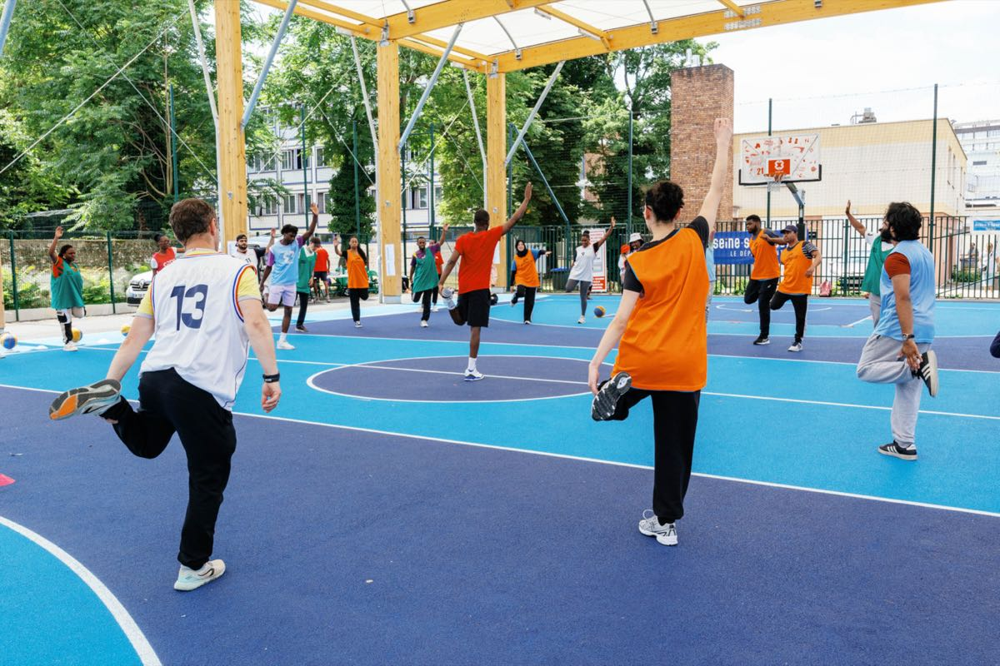

Bienvenue sur
Partenariat simplifié
L'outil qui vous aidera à gérer et piloter les actions d'insertion par le sport.

L'outil qui vous aidera à gérer et piloter les actions d'insertion par le sport.
